월급의 절반은 쓰고, 절반은 모아요
월급이 며칠 만에 사라지는 사람에게 작가가 먼저 권하는 건 투자가 아니라 규칙이에요. 시장에도 소비에도 남이 정해 주는 규칙은 없으니, 내 규칙을 직접 정해 두지 않으면 돈은 끝없이 새어 나가요. 편집자가 이 말을 화면 가운데 인용 카드로 띄워 뒀어요.
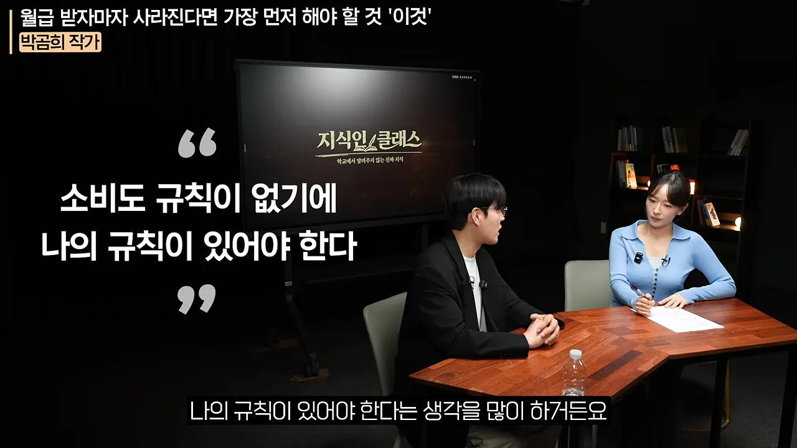
그 규칙은 한 줄이에요. 화면 아래 큰 자막처럼 월급의 절반은 쓰고, 절반은 모아요. 다 써 버리는 것도, 투자하겠다며 거의 안 쓰는 것도 양극단이라 좋지 않다고 봐요. 쓰는 돈은 최대 절반, 모으는 돈은 최소 절반이에요.
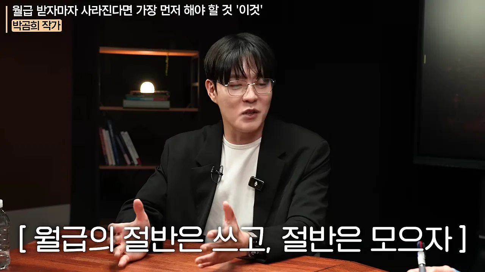
절반도 못 모은다면 구조를 의심해요
월급 300만 원이면 150만 원으로 살아야 해요. 작가는 서울 월세가 관리비까지 70만 원쯤 나가고 교통비를 더해도, 가계부를 쓰며 아껴 쓰면 누구나 할 수 있는 수준이라고 봐요. 그래도 안 된다면 습관보다 구조에 문제가 있는 거예요. 집에 너무 많은 돈을 쓰고 있거나, 구독료가 쌓여 있거나요.
작가 스스로 '잔소리꾼'이라며 든 예도 있어요. 지인의 부동산 계약을 말린 일, 구독 서비스를 다 정리해 보니 한 달에 20~30만 원이 나가고 있던 일이에요. 신용카드를 자르고, 가계부를 쓰고, 가계부 앱에 꼬박꼬박 적는 것부터가 첫 단계예요.
남은 150만 원은 이 순서로 나눠요
절반을 모으는 데 성공했다면, 그 150만 원으로 할 일이 정해져 있어요. 작가는 먼저 예적금으로 가지 말라고 해요. 지금은 갈 필요가 없다는 거예요. 아래 그림은 영상이 말로 설명한 순서를 월급 300만 원 기준으로 한 줄에 옮긴 거예요.
청약과 보험은 최소한으로
청약은 월 2만 원이어도 괜찮아요. 제도가 어떻게 돌아가는지 알아 두는 경험이 의미 있다는 거예요. 보험은 비상금보다 먼저예요. 작가는 인터넷으로 최소한 필요한 건강 보험을 알아보고 직접 가입해서 월 5만 원 정도를 내고 있어요. 어릴수록 유리하고, 그 정도로도 100세까지 웬만한 건 보장된다고 해요. 사망 시 1억 원이 나오는 보험도 월 1만 원 정도면 된다고 해요. 다만 10만 원을 넘기거나 저축처럼 쓰지 말고, 다쳤을 때를 막는 용도로만 챙기라고 해요.
연금저축 10만 원, 나머지는 전부 ISA
월급 300만 원이면 대기업 신입 수준이라, 둘째 해부터 연말정산이 빡빡해져요. 그래서 연금저축을 미리 열고 10만 원부터 넣어요. 화면 그래픽이 이 갈림길을 보여 줘요. 왼쪽 150만 원에서 오른쪽 위 연금저축 '10~20만 원 저금', 아래 ISA '130만 원 저금'으로 갈라져요.
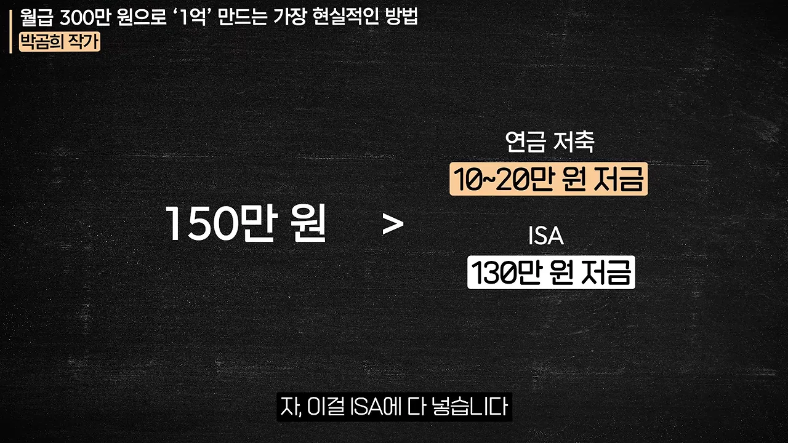
작가는 이 돈을 '전부 투자할까, 일부만 할까'로 나누지 말라고 해요. ISA 안에서 안전하게 굴릴지, 적극적으로 굴릴지만 고르면 된다는 거예요. 길은 여러 갈래예요. 미국 지수를 사는 사람, 국내 시가총액 1·2위를 사는 사람, 신경 쓰기 싫어서 주식 6 : 채권 4나 TDF(Target Date Fund)로 가는 사람이 있어요. 하지만 귀찮다고 MMF(Money Market Fund)나 파킹 통장에만 두는 건 좋지 않은 선택이라고 해요.
3~5년, 한 사이클을 겪어요
적극적으로 투자하라는 이유는 기간이에요. ISA는 3~5년짜리 계좌이고, 작가는 3~5년을 주식 시장의 투자 사이클 하나로 봐요. 3년부터 수익이 날 확률이 크게 오르고 5년이면 더 올라간다는 거예요. 1년 만에 마이너스가 났다고, S&P 500이 2년째 마이너스라고 판단하는 건 섣부르다고 해요.
평소 은퇴를 앞둔 사람에게는 배당 투자와 안정적인 투자를 강조하는 작가지만, 초년생에게는 반대로 용기를 내라고 해요. 경험이 쌓이는 시기이기 때문이에요.
결국 130으로 투자를 못하는 친구는 나중에 1억 3천 가지고 이상을 할 가능성이 더 커진다는 거죠.
— 영상 05:59
월 130만 원이면 1년에 2천만 원 가까이 쌓여요. 3~5년이면 6천만 원, 8천만 원, 1억 원이 돼요. 그사이 손실에서 회복하는 데 시간이 걸린다는 것도 몸으로 배우게 돼요. 한 사이클이 끝날 즈음이면 대리·과장이 되어 월급도 100만 원쯤 올라 있을 테니, 진짜 출발은 그때라고 봐요.
초년생 계좌는 세 개, 돈은 은행 → CMA → ISA
CMA에 연금저축, IRP, ISA까지 이야기는 많은데 정작 무엇을 열어야 할지 지친 사람이 많아요. 작가의 답은 간단해요. 초년생은 증권사에서 세 개만 열어요. 계좌를 만들 때 무엇을 개설할지 물어보면 고민하지 말고 이 셋을 고르라고 해요.
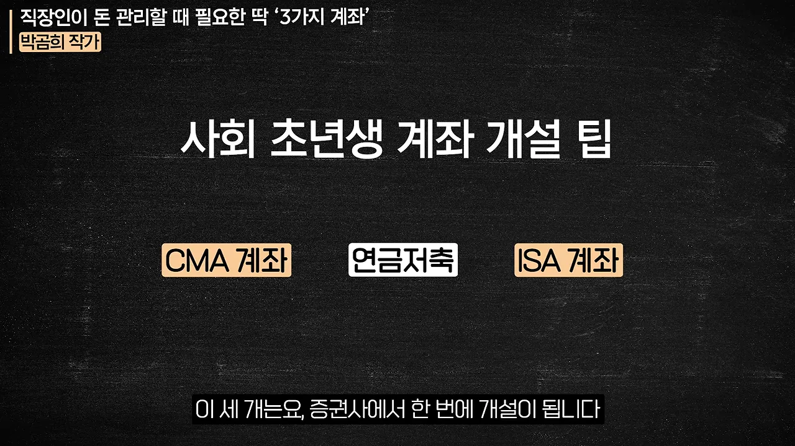
월급이 흘러가는 길
월급은 회사가 정해 주는 은행 계좌로 받아요. 카드 대금, 청약, 월세처럼 빠져나가는 돈은 전부 이 은행 계좌에 걸어 둬요. CMA로는 안 되는 자동이체가 있기 때문이에요. 신용카드는 신용 등급을 위해 쓰되, 카드 대금 날짜를 월급 다음 날로 옮겨요. 그러면 이틀 안에 은행 계좌에서 나갈 돈이 다 나가고, 남은 돈을 통째로 CMA로 옮길 수 있어요.
flowchart LR A["은행 계좌
월급 입금"] -->|"다음 날"| B["카드 대금·청약·월세
자동이체"] A -->|"남은 돈 전부"| C["CMA
하루 단위 이자"] C -->|"1순위"| D["ISA
투자"]
CMA는 하루만 맡겨도 이자를 붙여 주니, 그 돈은 기다리는 동안에도 이자를 받아요. 그러다 1순위로 ISA에 보내 투자해요. 한 가지 단서도 붙여요. 나중에 대출 우대를 받으려면 은행에 월급 이체 실적이 있어야 해서, 월급은 은행으로 받는 거예요. 좋은 것만 골라 쓰는 구조예요.
직급이 오르면 계좌가 하나씩 늘어요
화면 왼쪽 그래픽 '필수 계좌 늘리는 방법'이 이 과정을 세 단계로 정리해요. 1단계 ISA 투자, 2단계 연금저축 추가 투자, 3단계 IRP·연금저축 추가 개설 및 투자예요.
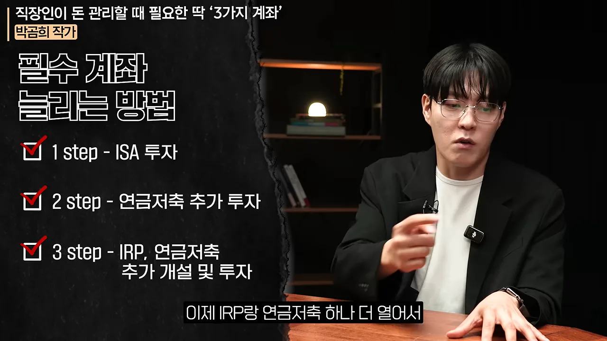
단계마다 영상이 말한 금액을 표로 옮기면 이래요.
| 시기 | 새로 하는 일 | 월 납입 예시 |
|---|---|---|
| 초년생 | ISA에 거의 전부 | ISA 약 130만 원 · 연금저축 10만 원 |
| 진급 후 | 연금저축 납입을 늘려요 | 연금저축 +10~20만 원 |
| 차장·부장쯤 (투자금 월 200만 원 안팎) | 연금저축이 50만 원을 넘으면 IRP 추가 | ISA 127 · 연금저축 50 · IRP 25만 원 |
IRP를 만들 때 팁도 있어요. 은행과 증권사 둘 다 IRP를 열 수 있는데, 연금저축과 달리 IRP는 자산관리·운용관리 수수료가 붙어요. 작가는 증권사 IRP를 열면 이 수수료를 아예 안 낼 수 있다고 해요.
한도를 다 채운 다음: 금현물, 위탁 계좌, 액티브 비율
시간이 더 지나 ISA, 연금저축 50만 원, IRP 25만 원을 모두 채웠다면 남는 돈을 어디에 둘까요. 작가는 두 갈래를 제시해요.
금현물 계좌로 1g씩
첫째는 증권사의 금현물 전용 계좌예요. 금 1g을 살 만큼의 돈을 떼어 한 달에 1g씩 모아요. 작가는 이 계좌를 금 매매차익에 세금을 내지 않는 거의 유일한 계좌라고 소개해요. 100g 단위가 모이면 실물로 출고할 수도 있고, 출고하지 않고 그 자리에서 오른 만큼 팔아도 세금이 없다고 해요.
진행자가 금값이 떨어졌을 때만 사면 어떠냐고 묻자, 작가는 잘라 말해요. 금과 환율은 전문가도 못 맞히고, 예측하느라 쓴 시간이 아깝다는 거예요. 금은 언젠가 올라 있을 거라 믿고 평생 1g씩 모으는 것, 그 '언젠가'에 많이 모아 둔 게 중요하다고 해요. 금을 몸에 걸치기보다 금현물 계좌에 모으라는 말도 덧붙여요.
세액공제를 안 받는 연금저축 하나 더
둘째는 연금저축을 하나 더 열어 세액공제 없이 모으는 방법이에요. 작가는 이 계좌가 나중에 아주 요긴하다고 해요. 공제를 안 받았으니 넣을 때도, 연금으로 받을 때도, 중간에 깰 때도 세금을 안 내요. 그러면서 계좌 안에서 굴리는 동안 세금을 미뤄 주는 연금 계좌의 혜택은 그대로 받아요.
완성형은 여섯 개, 그리고 위탁 계좌
부장쯤 되면 계좌가 몇 개일까요. 화면 그래픽이 하나씩 채워져요. 윗줄에 CMA·ISA·연금저축 계좌, 아랫줄에 IRP·금현물 계좌가 있고, 마지막으로 흰 칸의 퇴직 IRP 계좌가 은퇴할 때 생겨요.
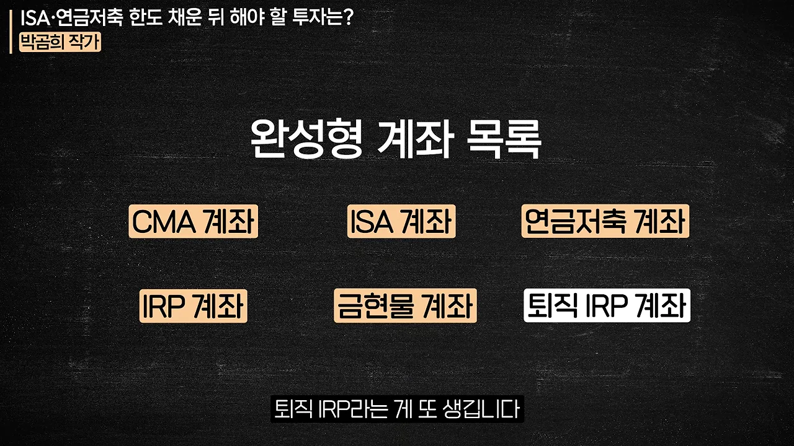
그런데 사실 하나가 더 있어요. 흔히 주식 계좌라고 부르는 위탁 계좌예요. 위의 계좌들은 장기 수익률을 끌어올리는 곳이라, 지금은 방산이다, 조선이다, 반도체가 더 간다 하는 단기 판단은 여기서 하면 안 맞는다고 해요. 그런 액티브 투자는 위탁 계좌에서 따로 해요.
액티브 비율은 반반에서 시작해요
그럼 액티브 투자에는 얼마나 넣어야 할까요. 정답은 '각자 알아서'지만, 정말 모르겠다면 반반으로 시작하라고 해요. 비율은 해 보면서 몸으로 정해진다는 거예요. 연금에 1억, 퇴직금도 꽤 있는 사람이 주식에는 5천만 원만 넣는 식으로, 경험이 쌓인 사람은 반이 날아가도 버틸 만큼만 넣는 '비율 제한'을 해요. 전재산을 넣었다면 돈을 벌었어도 투자 실패라고 봐요.
몰입도가 높은 사람은 시장이 나빠도 투자를 놓지 않아요. 증권 방송과 리포트를 꾸준히 보면 공부가 지혜로 쌓이고, 어느 순간 '지금이면 적극적으로 사도 되겠다'는 투자가 보여요. 그런 사람은 그때 큰돈을 넣게 되고, 작가는 그래도 괜찮다고 봐요. 반대로 해 볼수록 모르겠다는 사람은 다시 패시브 비중이 커지면 돼요. 중요한 건 어느 쪽이든 늘 투자를 하고 있는 거예요. 주식을 놓고 살면 나중에 뒤쫓다가 엇박자를 타기 쉽다고 해요.
CMA는 RP형 말고 발행어음형이나 MMW형
CMA를 열려고 보면 RP(Repurchase Agreement)형, MMF형, 발행어음형처럼 종류가 여러 개예요. 진행자가 위험도 차이를 묻자, 작가는 위험은 걱정할 필요가 없다고 답해요. CMA를 이루는 RP, MMF, 발행어음, 증권금융 예금은 깨질 가능성이 없다고 보기 때문이에요. 그러니 금리만 보고 고르면 돼요.
| 종류 | 영상에서 말한 특징 | 여는 법 |
|---|---|---|
| RP형 | 금리가 가장 낮아요 (영상 당시 2% 중반). 월복리 | 스마트폰으로 열면 기본값 |
| 발행어음형 | RP형보다 금리가 높아요. 일복리 | 발행어음을 낼 수 있는 증권사에서 앱으로 바꿔요 |
| MMW(Money Market Wrap)형 (랩형) | 돈을 한국증권금융 예금으로 운용해요. 보수를 내고도 세후 수익률이 발행어음형보다 높을 때가 많아요 | 비대면 개설이 안 돼서 지점에 한 번 가야 해요 |
MMW형은 신용도가 아주 높은 공적 성격 기관의 예금으로 굴리는 셈이라, 작가는 비공식 자리에서는 그냥 이걸 하라고 권한다고 해요. 그 자리에서 그대로 말해 버려서, 편집자가 '비공식적인 추천은 MMW형'이라는 큰 자막을 달았어요.
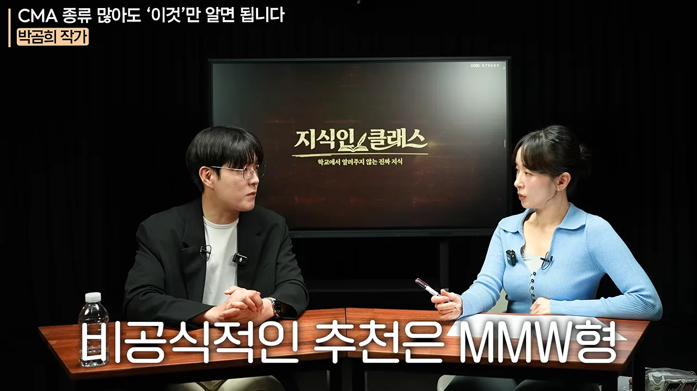
그런데도 실제로는 발행어음형을 쓰는 사람이 훨씬 많을 거라고 해요. MMW형은 스마트폰으로 열 수 없어서, RP형으로 연 뒤 지점에 한 번 가서 바꿔야 하기 때문이에요. 그래서 결론은 이래요. 지점에 한 번 갈 수 있다면 MMW형, 아니면 발행어음형이에요. 작가는 수시 입출금인데도 금리가 3%를 넘을 거라고 했어요. 요즘 지점에서 'MMW로 바꾸러 왔다'는 손님이 부쩍 많다는 일화도 나와요.
비상금 통장 대신 꺼내 쓰는 순서를 정해 둬요
아플 때나 이사할 때 쓸 돈은 따로 모아 둬야 할까요. 작가의 답은 '없다'예요. 종잣돈과 비상금은 부동산 투자가 기본이던 시절의 개념이라고 봐요. 부동산은 큰돈이 들어가니 종잣돈을 모으는 기간을 정하고, 그동안 다칠 때를 위해 비상금을 따로 떼라고 했던 거예요. 금융 투자에서는 둘 다 필요 없다고 해요.
이유는 두 가지예요. 금융 자산은 팔아서 꺼내기 쉬워요. 그리고 큰돈이 갑자기 필요할 확률은 낮아서, 그 확률 하나를 위해 현금을 묶어 두면 기회비용이 더 커져요. 정말 위험한 일은 보험으로 막고, 잘 안 일어날 일은 일어났을 때 대응하면 된다는 거예요.
꺼내 쓰는 순서
앞에서 짠 계좌 구조가 여기서 힘을 써요. 영상은 계좌마다 꺼내기 쉬운 정도가 다르다고 설명해요. 아래 그림이 그 순서예요.
ISA는 원금을 아무 페널티 없이 뺄 수 있어요. 작가도 예상 못 한 일로 큰돈이 필요했을 때 ISA에서 필요한 만큼 꺼내 썼다고 해요. 결혼처럼 더 큰돈이 필요하면 ISA를 전부 팔아요. 여러 종목에 나눠 뒀다면 이익과 손실을 합산해서 계산해요.
연금저축은 출금이 안 되지만 연금 담보대출이 있어요. 증권사가 적립금의 50~60%까지 낮은 금리로 빌려준다고 해요. 10년쯤 부었다면 5~6천만 원이 쌓여 있을 테니 급한 불은 끌 수 있어요. 그래도 부족하면 해지해요. 그동안 세액공제받은 금액과 수익에 16.5%가 붙어, 몇천만 원이면 몇백만 원이 될 수 있어요. 하지만 오래 투자해 그 이상 수익이 났다면 감당할 만하고, 무엇보다 꺼낼 수 있다는 게 중요하다고 봐요.
IRP는 중도 출금이라는 개념이 없고 해지만 할 수 있어요. 그래서 초년생에게는 권하지 않았던 거예요. 전세 보증금을 올리거나 결혼처럼 목돈이 드는 일이 많은 시기라서요. 세액공제가 더 필요한 과장·차장쯤 되어서 추가해요.
대비할 일과 대응할 일
작가는 이걸 '대비'와 '대응'으로 나눠요. 큰돈이 필요할 확률처럼 잘 안 일어나는 일은 대응의 영역이에요. 반대로 시장이 좋을 때 채권이나 금을 사 두는 일, 자산배분과 배당 투자는 대비의 영역이에요. 미래를 맞힐 수 없으니 미리 준비하는 거예요. 이 대목에서 편집자는 버핏의 말을 화면에 띄웠어요.
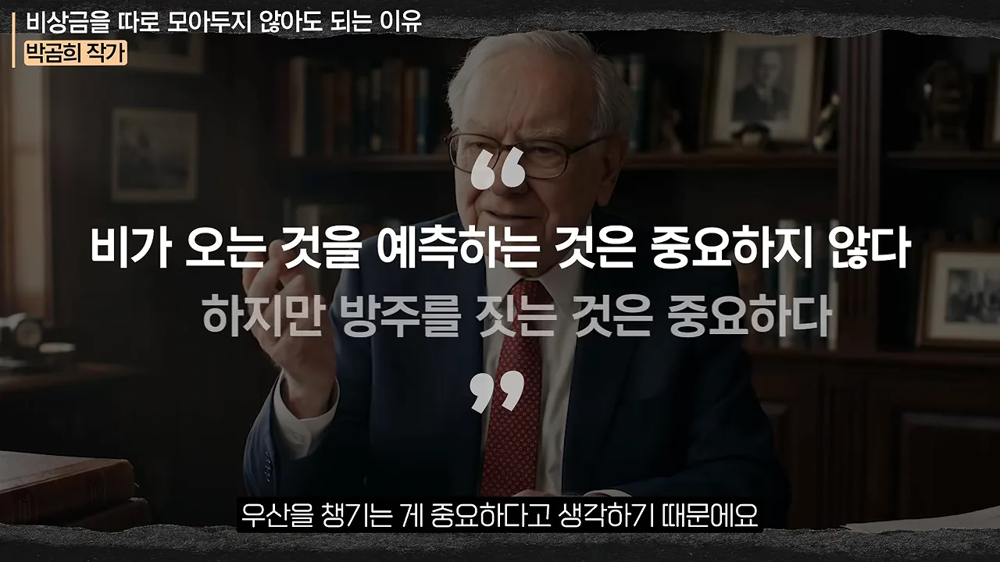
코스피가 오를지 묻는 사람에게 작가는 모른다고 답해요. 맞히는 사람이 되고 싶지도 않다고 해요. 오르면 기쁘고 떨어져도 덜 슬픈 사람이 되면, 오래 투자할 수 있다는 거예요.
ETF 속을 다 알아야 시작하나요
미국 장기 국채 ETF를 사라는데 그 안에 뭐가 든 건지 모르고 사도 되냐는 질문도 많이 받는다고 해요. 작가의 비유는 운전면허예요. 면허 따러 온 사람에게 엔진 구조부터 가르치지 않잖아요. 차에서 엔진이 제일 중요한 건 맞지만, 우리에게 먼저 필요한 건 사용법이에요. 노후를 위해 할 일이 이렇게 많은데 공부를 다 끝내고 시작하면 늦어요. 구조 공부는 나중에 하더라도 바로 실행하라는 거예요.
내일 월급날이라면: ISA에 3만 원, S&P 500 ETF
마지막 질문은 '내일 월급이 들어오면 딱 하나 무엇부터 할까'예요. 작가는 액티브와 패시브의 차이로 답을 풀어요. 화면에는 두 줄이 차례로 자막으로 떠요.
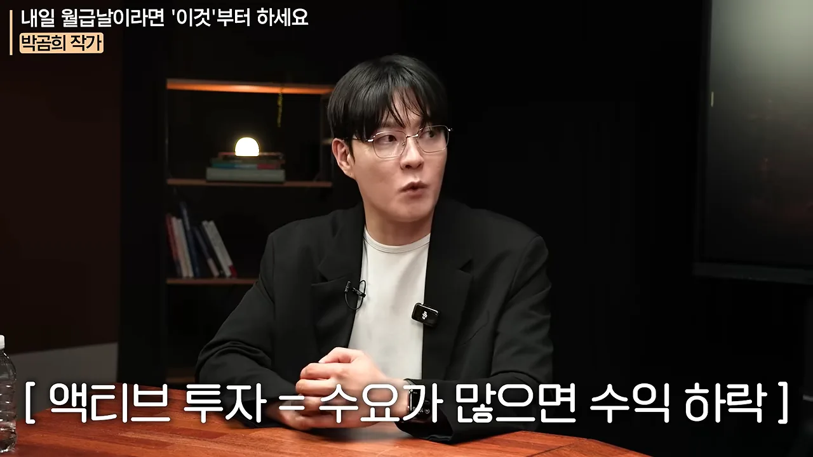
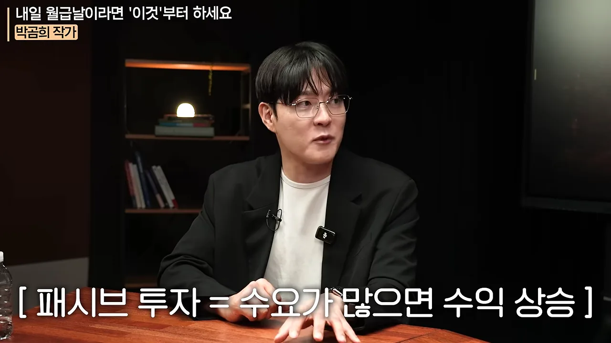
패시브 투자 쪽에서 사람이 가장 많이 몰린 곳을 보면, 해외에서는 미국 시장이 압도적이고 국내에서도 퇴직연금 잔고와 연금저축 계좌 수가 어마어마해요. 그러니 하나만 한다면 패시브로 가장 많은 사람이 있는 곳을 고르는 게 마음 편한 출발이라는 거예요. 그래서 나온 첫 행동이 이거예요.
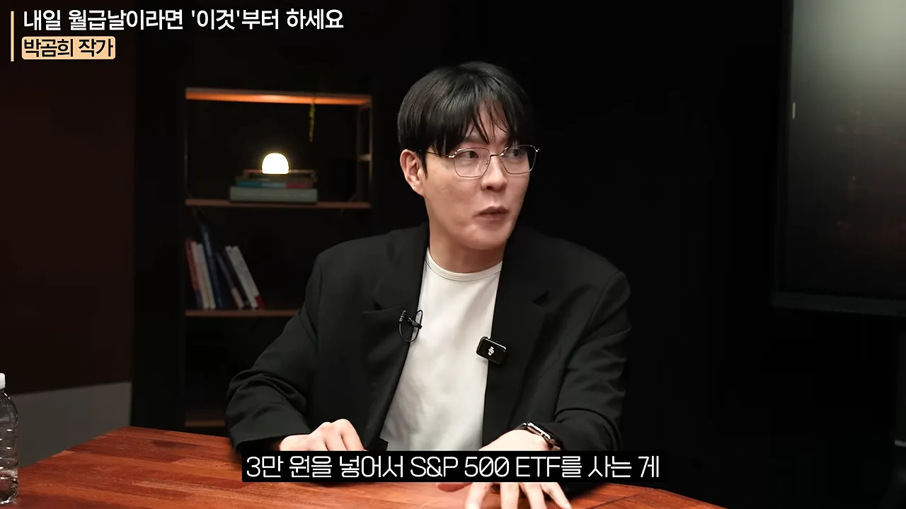
작가는 강의 끝에 늘 하는 부탁으로 마무리해요. 30년 뒤에 '그때 별생각 없이 계좌를 열었는데 노후가 풍족해졌다'는 댓글 하나를 남겨 달라는 거예요.